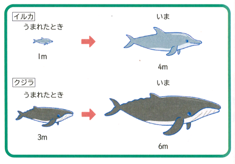
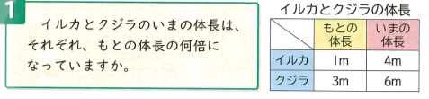

| 時数 | ページ | 目標 | 学習内容 | 主な評価基準 |
|---|---|---|---|---|
| 既習（3年等） | — | 何倍かを表す表現や整数倍の意味を理解している。 | ・「〜の○倍」という意味の振り返り ・簡単な倍率の計算 |
（知技）2量の関係を整数の倍で表現できる。 |
| 導入・前時 | P.126 | 問題場面の長さを図に表し、大きさの変化に関心を持つ。 | ・イルカとクジラのもとの長さを図で可視化する準備 | （態度）量の変化に関心を持ち、比べようとしている。 |
| 第1時（本時） | P.126〜127 | 図を見ながら、元の数と今の数を比べ、何倍になっているかを捉えることができる。 | ・ある量をもとにして何倍かを考える ・図を用いて「元の体長」と「今の体長」を視覚的に比べる |
（思判表）図をもとにして、今の体長が元の体長の何倍かを見出し説明できる。 |
| 第2〜第5時 | P.128〜131 | もとの量を「1」とみなす見方を深め、倍率が小数になる場合や包含除・等分除の関係を統合的に理解する。 | ・1とみたとき割合（倍）を表すこと ・倍率（小数を含む）の計算 ・単元のまとめ |
（知技・思判表）もとにする量を1とした割合の意味を理解し、計算や問題解決ができる。 |
| フェーズ | フロー（目安時間） | クエッション（30字以内） | アンサー | フィードバック |
|---|---|---|---|---|
| 導入（P1） | F1:既習のふりかえり（2分） | 「2倍」や「3倍」ってどんな意味だったかな？ |
(A+) もとの長さの2つ分、3つ分！ (A+) もとの数に2や3をかけること！ (A+) 同じ長さがいくつか集まったもの。 (A-) たし算で2や3をたすこと。 |
(F+) 「◯つ分」という言葉、ばっちりだね！ (F-) たすんじゃなくて、「何個分か」で考えるんだったね。 |
| F2:主問題（2分） | イルカとクジラ、今の体長は元の何倍？ |
(A+) イルカは1mの4つ分で4倍！ (A+) クジラは3mが6mだから2倍！ (A+) 図を見ると、いくつ分かすぐ分かる！ (A-) クジラの方が増えた長さが大きいからクジラの方が何倍も大きい！ |
(F+) 図の目盛りに注目して比べられたね！ (F-) 増えた差（引き算）ではなく、「もとの長さのいくつ分か」で考えよう。 |
|
| F3:予想・見通し（3分） | 図を見ると、何倍かどうやって分かるかな？ |
(A+) もとの長さを図にあてはめて何個あるか数える！ (A+) 1mや3mの幅で今の長さを区切ってみる！ (A+) 今の長さをもとの長さで割ってみる！ (A-) ただ長さを引いて比べればいい。 |
(F+) もとの幅で区切って見る着眼点が素晴らしい！ (F-) 「引き算」だと「倍」にならないから、図で何個分か並べてみよう。 |
|
| 展開（P2） | F4:めあての提示（2分） | 今日のめあてをみんなで確認しよう。 |
(A+) もとの体長の何倍になっているかでくらべる！ (A+) 図をよく見ながら比べればいいね。 (A+) イルカとクジラをそれぞれ調べよう。 (A-) 公式を覚えて当てはめる。 |
(F+) 目標がはっきり理解できたね！ (F-) 公式の前に、まずは図で視覚的に確かめようね。 |
| F5:自分で考え取り組む（5分） | 図に線や印をつけて、何倍か確かめられた？ |
(A+) イルカは1mが4つ並ぶから4倍。 (A+) クジラは3mが2つで6mだから2倍。 (A+) もとの長さを「1マス」や「1つの固まり」として見ているよ。 (A-) クジラは6mだから6倍。 |
(F+) 図にしっかり区切り線を引けていて分かりやすい！ (F-) 6mという数字だけでなく「もとの3m」がいくつ分かをみようね。 |
|
| F6:全体交流（5分） | みんなの図の比べ方を説明してくれるかな？ |
(A+) イルカはもとの1mが4回分で4mだから4倍！ (A+) クジラは3mの枠をあてはめると2回で6mだから2倍！ (A+) 元の長さと今の長さを並べて見比べると、何個分かがすぐ分かる！ (A-) クジラの方が元が長いから、クジラの方が倍数も大きいと思う。 |
(F+) 「何個分入っているか」を図で上手に説明できたね！ (F-) もとの長さ自体の大きさではなく「何個分増えたか」を比べよう。 |
|
| F7:教師の説明（3分） | もとの長さを基本にして見比べるとどうなる？ |
(A+) もとの長さがいくつ並んでいるかが「何倍」の意味なんだ！ (A+) 図を見ると視覚的に一目で分かるね。 (A+) クジラは3mのかたまりが2つ分ある！ (A-) もとの長さは気にしなくていい。 |
(F+) その通り！「もとの長さ」が一番大事な基準になるね。 (F-) 「もとの長さ」を基準にしないと「何倍」かは分からないよ。 |
|
| F8:主問題の解決（1分） | イルカとクジラ、それぞれの答えは出たかな？ |
(A+) イルカは4倍、クジラは2倍！ (A+) イルカの方が倍率は大きい！ (A+) 図で見比べられた！ (A-) イルカが4倍で、クジラは3倍。 |
(F+) 正解！しっかり図から読み取れたね。 (F-) クジラは3mが2つ分で6mだから2倍だよ、もう一度図を見よう。 |
|
| F9:学習内容のまとめ（3分） | 今日の学習で分かったことをまとめよう！ |
(A+) 図にかいてもとの体長と今の体長をくらべると何倍かがわかる！ (A+) もとの長さのいくつ分かを図で探せばいい！ (A+) 数字だけで迷ったら図を描けば何倍かすぐわかる！ (A-) 計算の公式だけ覚えれば図はいらない。 |
(F+) すばらしいまとめだね！図を描くことがポイントだね。 (F-) 図を描くことで、間違えずに「何倍か」が見えてくるんだよ。 |
|
| F10:適用問題（10分） | （本時は適用問題なし：別の動物の例で図を描いてみよう） |
(A+) もとの長さを1つ分として図を描いて比べられた！ (A+) 2mが8mになったら4倍だね！ (A+) 図を見ればすぐ分かるよ！ (A-) 図を描かずに適当に引き算した。 |
(F+) 自分でも図を描いて比べられたね！素晴らしい！ (F-) 慌てずに「もとの長さ」を図に取って数えてみよう。 |
|
| 終末（P3） | F11:教師の説話（3分） | 実際のクジラやイルカの成長のスピードって知ってる？ |
(A+) 生まれた時は小さくても、何倍も大きくなるんだね！ (A+) 赤ちゃんのときとも比べられそう！ (A+) 他の動物の成長も何倍か調べてみたい！ (A-) 算数に関係ないからどうでもいい。 |
(F+) 身の回りの自然や生き物の成長にも「倍」が使われているね！ (F-) 身近な生き物の大きさを比べるのにも算数が役立つんだよ。 |
| F12:本時のふりかえり（7分） | 今日の学習で「なるほど！」と思ったことは？ |
(A+) もとの長さと今の長さを図で見比べるとすごく分かりやすかった！ (A+) クジラの方が長さは伸びているのに、倍で見るとイルカが大きいのが面白かった！ (A+) 次回も図を使って考えてみたい。 (A-) 難しくて何もわからなかった。 |
(F+) 「倍で比べると見え方が変わる」という面白い気づきができたね！ (F-) 大丈夫、図を一緒に見直して「いくつ分か」をゆっくり数えてみよう。 |


※本時は適用問題なし